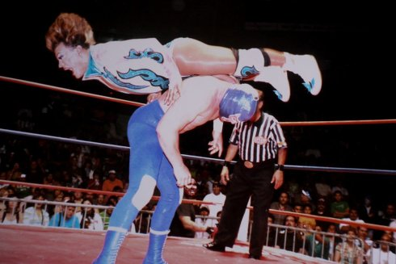

{kind=link}
Cassandro, the Exótico!

Marie Losier
Wednesday | 16 oct 10.30 pm | Werkstattkino | closing
The film mixes footage from fights, on-camera interviews, Skype
conversations, family encounters, a music collage, and intimate backstage confessions. It pays attention to settings and objects as an extension of the protagonist, offering a glimpse into his cultural and religious Mexican roots. (Cristina Álvarez López)
Marie Losier born 1972 in France. She has lived in New York for seventeen years. Studied American literature in Paris and painting at Hunter College in New York. Losier stages idiosyncratic documentary artist portraits of heroes, personal friends and idols of the underground scene. Her works can be seen in major museums around the world as well as at renowned festivals, cinemas and galleries. Her films can be seen at the Tate Modern, the Centre Pompidou, the Rotterdam Film Festival and the Cinémathèque Française.
|
| Films The Ballad of Genesis and Lady Jaye 2011 (6. UX) | In Hommage to George and Mike Kuchar 2011 | Alan Vega, Just a Million Dreams 2013 | Masha Natasha 2015 | Cassandro, the Exótico! 2018
|